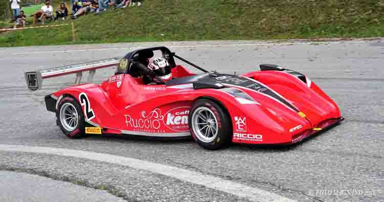
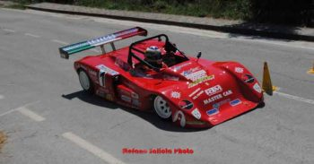
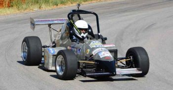

47ª Garessio ? S. Bernardo
7 Agosto 2019
Aperte le iscrizioni alla 47ª Garessio ? S. Bernardo che si correrà l?8 di settembre
di Ufficio Stampa Supergara

4° Slalom di San Nicola
4 Agosto 2019
Nel 4° Slalom di San Nicola vittoria di Fabio Emanuele davanti a Scarafone e Di Cristofaro
di Stefano Saliola

5° Autoslalom Città di Sant?Angelo Muxaro
4 Agosto 2019
Girolamo Ingardia si aggiudica il 5° Autoslalom Città di Sant?Angelo Muxaro
di Martin Sartorio